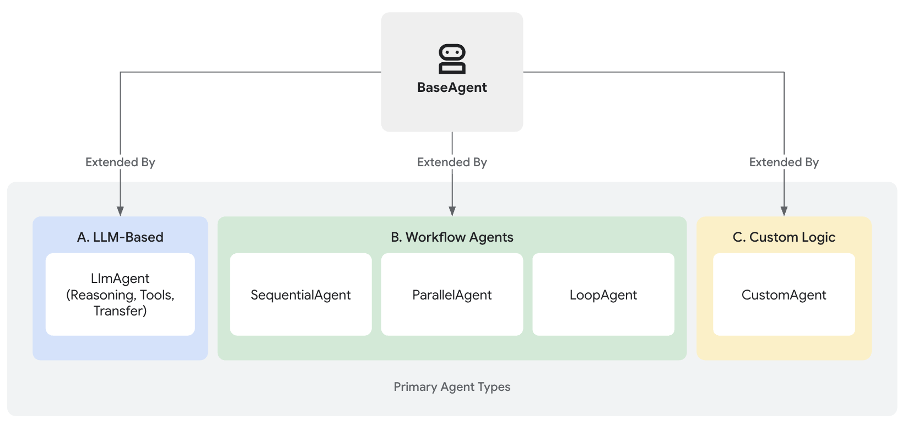

智能体
在智能体开发套件（ADK）中，智能体是一个独立的执行单元，能够自主行动以实现特定目标。智能体可以执行任务、与用户交互、使用外部工具，并与其他智能体协同工作。
ADK中所有智能体的基础是BaseAgent类，它作为基础蓝图存在。要创建功能性智能体，通常需要通过以下三种主要方式扩展BaseAgent类，以满足从智能推理到结构化流程控制等不同需求。

核心智能体类别
ADK提供以下不同类别的智能体来构建复杂应用：
-
大模型智能体（
LlmAgent,Agent）：这类智能体以大模型（LLM）为核心引擎，能够理解自然语言、进行推理规划、生成响应，并动态决定后续操作或工具使用，非常适合需要灵活处理语言相关任务的场景。了解更多大模型智能体... -
工作流智能体（
SequentialAgent,ParallelAgent,LoopAgent）：这类专用智能体按照预定义的确定性模式（顺序、并行或循环）控制其他智能体的执行流程，其流程控制本身不使用大模型，非常适合需要可预测执行的结构化流程。探索工作流智能体... -
自定义智能体：通过直接扩展
BaseAgent类创建，这类智能体允许实现独特的操作逻辑、特定控制流程或标准类型未涵盖的专用集成，可满足高度定制化的应用需求。了解如何构建自定义智能体...
选择合适的智能体类型
下表提供了高层次对比以帮助区分智能体类型。随着后续章节对各类别的深入探讨，这些差异将更加清晰。
| Feature | LLM Agent (LlmAgent) |
Workflow Agent | Custom Agent (BaseAgent subclass) |
|---|---|---|---|
| Primary Function | Reasoning, Generation, Tool Use | Controlling Agent Execution Flow | Implementing Unique Logic/Integrations |
| Core Engine | Large Language Model (LLM) | Predefined Logic (Sequence, Parallel, Loop) | Custom Python Code |
| Determinism | Non-deterministic (Flexible) | Deterministic (Predictable) | Can be either, based on implementation |
| Primary Use | Language tasks, Dynamic decisions | Structured processes, Orchestration | Tailored requirements, Specific workflows |
协同工作的智能体：多智能体系统
虽然每类智能体都有其独特用途，但真正的威力往往来自它们的组合。复杂应用常采用多智能体架构，其中：
- 大模型智能体负责基于语言的智能任务执行
- 工作流智能体使用标准模式管理整体流程
- 自定义智能体提供特殊能力或独特集成所需的规则
理解这些核心类型是使用ADK构建复杂、强大AI应用的第一步。
后续步骤
现在您已了解ADK中可用的不同智能体类型，接下来可以深入探索它们的工作原理和有效使用方法：